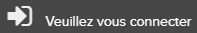
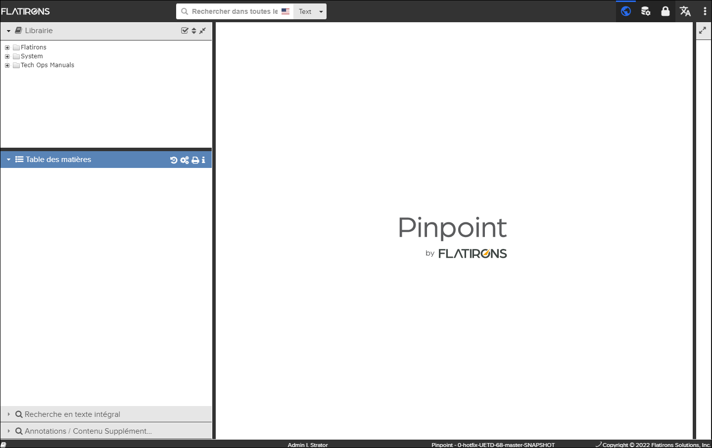
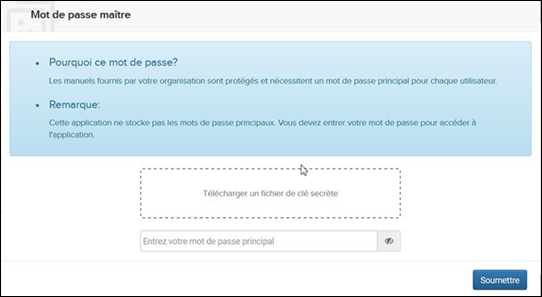
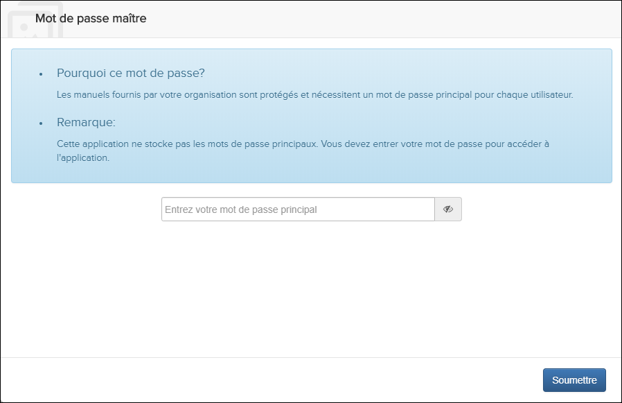

Pour des raisons de sécurité, lors du démarrage de l'application, la personne qui
utilise le navigateur est requise de se connecter. En outre, après des périodes
d'inactivité, l'utilisateur doit se connecter au navigateur.
Remarque : Si l'application: est
configuré pour autoriser l'accès en invité, vous pouvez accéder au point d'accès
public accessible aux invités. Contenu sans avoir à se connecter.
Remarque : Pour
l’assistance d'un nouveau nom d'utilisateur et mot de passe, contacter votre
superviseur ou administrateur.
Effectuez les étapes suivantes :
-
Faites l'un de ces choix:
- Entrez votre nom d'utilisateur et votre mot de passe, puis cliquez sur
le bouton CONNEXION. Remarque : Si vous souhaitez vérifier l'orthographe du mot de passe, cochez la case Afficher le mot de passe.
- Non applicable pour Pinpoint Standalone Light. Cliquez sur le
bouton CONTINUER COMME INVITÉ.
Si l'environnement autorise également les utilisateurs authentifiés, vous pouvez sélectionner

dans la liste déroulante Plus la déconnexion de l'environnement public et
afficher la page de connexion du contrôle d'accès.
Plus la déconnexion de l'environnement public et
afficher la page de connexion du contrôle d'accès.
- Entrez votre nom d'utilisateur et votre mot de passe, puis cliquez sur
le bouton CONNEXION.
L'application s’ouvre, en affichant la page d'accueil dans la fenêtre Contenu. Dans la configuration par défaut, la page d'accueil est le logo du Flatirons, comme montré dans le graphique ci-dessous, mais il est configurable se référer à La fenêtre de configuration pour plus d'informations sur la modification de la page d'accueil.

Page principale de l'application
Non applicable pour Pinpoint Standalone Light.
Si votre
administrateur a configuré votre environnement pour le cryptage des données,
dans la version Pinpoint Standalone, il existe les conditions suivantes:
- Lors de la première connexion, vous devez télécharger un fichier de clé
secrète et entrer votre mot de passe principal. Remarque : Votre administrateur vous fournira votre mot de passe principal et l'emplacement du fichier de clé secrète.Remarque : Notez ce mot de passe. L'application ne stocke pas les mots de passe.Voici la boîte de dialogue qui apparaît après la connexion à Pinpoint Standalone:

- Après votre première connexion à Pinpoint Standalone, il vous suffit de
saisir votre mot de passe principal.Remarque : L’invite ne s'affiche qu'une fois pour le mot de passe principal de cette instance autonome, même si vous vous connectez. Si vous redémarrez Pinpoint Standalone, l’invite apparaît et vous devez vous reconnecter.Voici la boîte de dialogue qui apparaît lors des connexions suivantes:
